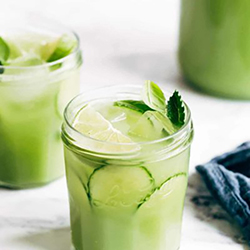
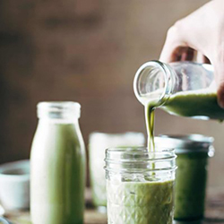

Beverages Recipes
Not just stuff on plates around here! We have a whole lineup of bevs for whatever drinkable need you're serving, whether it's just a nice way to start your morning or an afternoon pick-me-up or maybe something fun & fancy for the patio. We've got you!
01. Unbelievably Good Cashew Coffee

The creamiest morning coffee you've ever had! Made with just coffee, cashews, honey, and sea salt.
Click here for the recipe02. Cucumber Agua Fresca
Cucumber Agua Fresca! Cucumber, lime, mint, lemongrass, sugar, and honey. The perfect tart + fresh summery drink!
Click here for the recipe03. Iced Matcha Green Tea Latte
Iced Matcha Green Tea Latte featuring almond milk, matcha powder, and honey or agave. Totally vegan 3-ingredient perfection!
Click here for the recipe